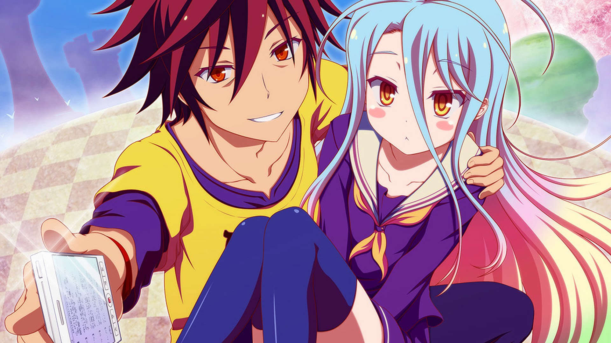
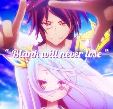
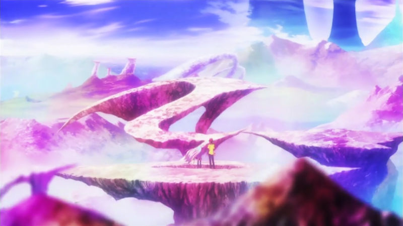
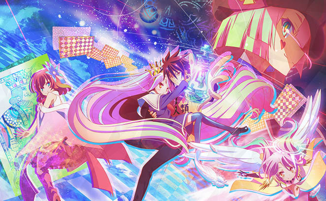

No Game No Life is an anime centered around Sora and his sister, Shiro. Together they make up the identity of Blank, an undefeated group of gamers. They both complement each other perfectly, Shiro is a human super computer able to calculate the best possible move for the current situation, however if the opponent does something unexpected or doesn't choose the best move Shiro can have trouble but Sora plays mind games with his opponent, figuring out their course of action and thinking of a strategy to exploit it. You could also say, Sora reads his opponents while Shiro reads the game which combined make them unstoppable. They think of the world as just another "crappy game" so one day they are challenged by a so called god and after beating him they are transported to the world of Disboard, a land where everything is decided by games and violence and robbery are forbidden.
This anime changes your point of view on the situation. One of the anime's main principles is "Blank never loses". So instead of running through your head, will they win?. You have to think of HOW they win. You have to think of the way they manipulate the game to turn a 0.01% chance into a 100%. They have solutions that are theoretically guessable by the viewers while not making them obvious to make it seem like they are dragging on the game.
No Game No Life is an anime that you enjoy looking at. It uses mostly bright colors. Even outlining in red instead of the typical black. Which make for a beautiful and vibrant world. But the art style changes dramatically when there is a sudden plot turn, where everything turns bland and drab,to match how the characters are percieving it.
No Game No Life is an anime that never left me disappointed. Even during episodes that weren't focused on story they stukk were full of laughs. It has great characters, story, humor, etc. Everyone should at least give the anime a shot.
